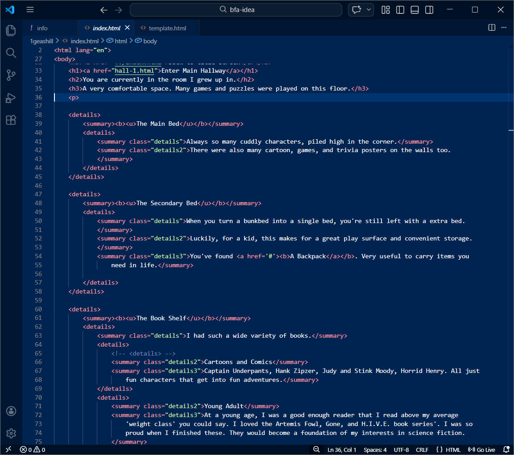
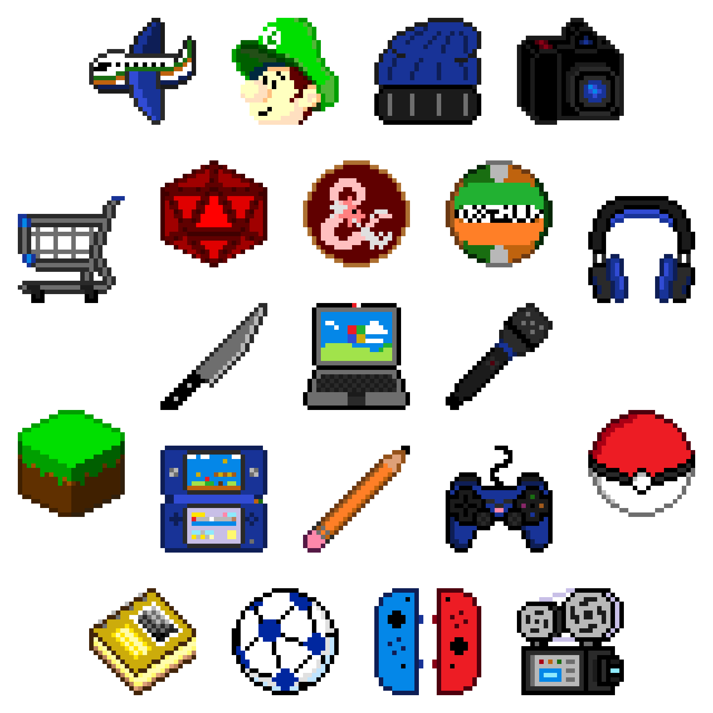

LYNDON LIVINGSTON
( HE/HIM )
Linktree: @theirishblackguy
About the Artist
Lyndon Livingston is a student at San Jose State University currently working towards a Bachelors of Fine Arts in Digital Media Art. He is a digital media artist with a focus in creative coding. Other mediums he has experience with and enjoys are 3D modeling and pixel art. A future dream project of his is to make a videogame that spans a world he has created. As a fan of video games such as Minecraft, Horizon video game series, early Pokémon series and older retro games and with the acquired skills of working with Blender, Aseprite, JavaScript, HTML, and CSS, he feels capable of attaining the goal he has set for himself.
The Story So Far
Hi, I'm Lyndon. For a very long time, I've enjoyed playing video games of many different varieties, from pixel art 2D side-scrollers to realistic open world RPGS. Due to my experiences, I wanted to be involved in the video game industry one day but did not know to what extent. Over the last few years, I grew more interested in coding and thought that coding video games might be a good fit for me. This project was an opportunity for me to execute my interests and also talk about myself, so I created a video game autobiography which expresses my love for code, incorporates my favourite art medium of pixel art, and introduces myself to the game development community.

